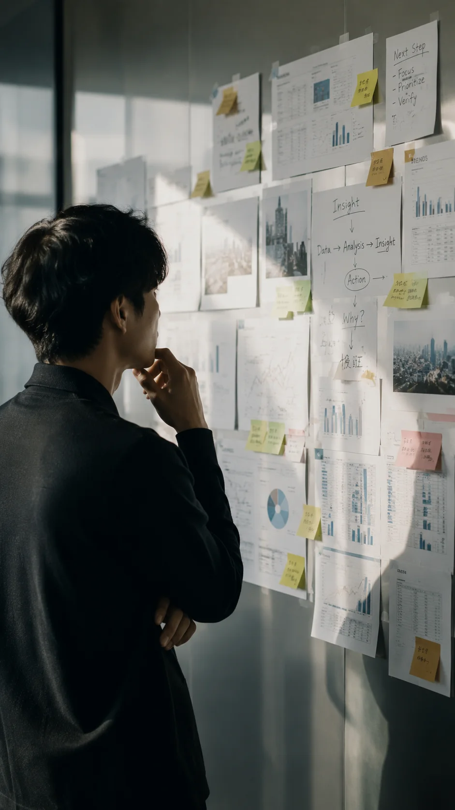
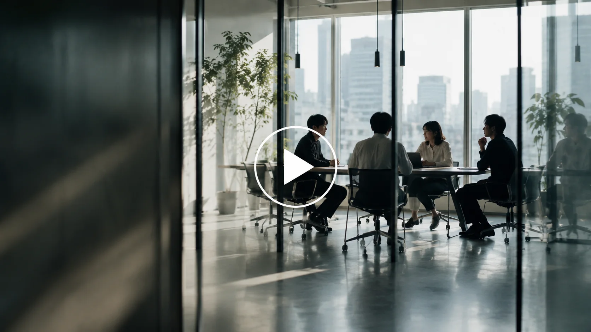

産業を深く見る
企業の現在地とこれからを知るほど、届けるべき人の輪郭が見えてきます。
Recruitment / 2026
誰かの決断に、誠実なきっかけを。
採用の未来を、ともにつくる。
About
業界を見る力と、人を想うまなざし。その両方で、心から納得できる出会いをつくります。
企業の現在地とこれからを知るほど、届けるべき人の輪郭が見えてきます。
履歴書の奥にある迷いや願いまで聞き、選択の意味を一緒に見つめます。
一人で抱え込まず、仲間の知見を重ねて、よりよい可能性へ導きます。
Numbers
数字の奥にあるのは、約束に向き合い続けた時間。信頼を積み重ねる姿勢を大切にしています。
People
考え方も得意領域も違うからこそ、ひとつの出会いを多面的に見つめられます。
Consultant
不安や期待を受け止めながら、次に進む理由を一緒に言葉にしていきます。

Researcher
小さな兆しを見逃さず、誰かの可能性につながる情報へ育てていきます。
Account Lead
組織の未来を想像し、採用が前向きな変化になる道筋を描きます。
Work
人を探すだけではなく、なぜ迎えるのか、どう進むのかまで一緒に考えます。
事業の願いを聞き、採用が本当に向かうべき先を明らかにします。
候補者の声に深く向き合い、選ぶことへの納得を支えます。
市場の変化を読み解き、出会うべき人へ届く言葉に変えていきます。
Culture
自由に考え、率直に話し、最後は誠実な成果に向き合う。
人の未来を扱う仕事だからこそ、基準を高く持ち続けます。

Movie
言葉になりきらない想いまで聞く。私たちの採用への向き合い方を映します。
Open Positions
誰かの選択を支える仕事に、まっすぐ向き合いたい人へ。あなたの問いを歓迎します。
Selection Flow
選考は、評価だけの場ではありません。お互いの想いを確かめ、前向きに選ぶための対話です。
まずは、あなたが大切にしてきたことを聞かせてください。
経験だけでなく、これから向かいたい先まで伺います。
チームとの対話を通じて、働く姿を具体的に重ねます。
期待する役割と、あなたの想いが重なる形を確認します。
Entry
あなたの問いが、誰かの未来を動かす力になる。
募集内容はこちら